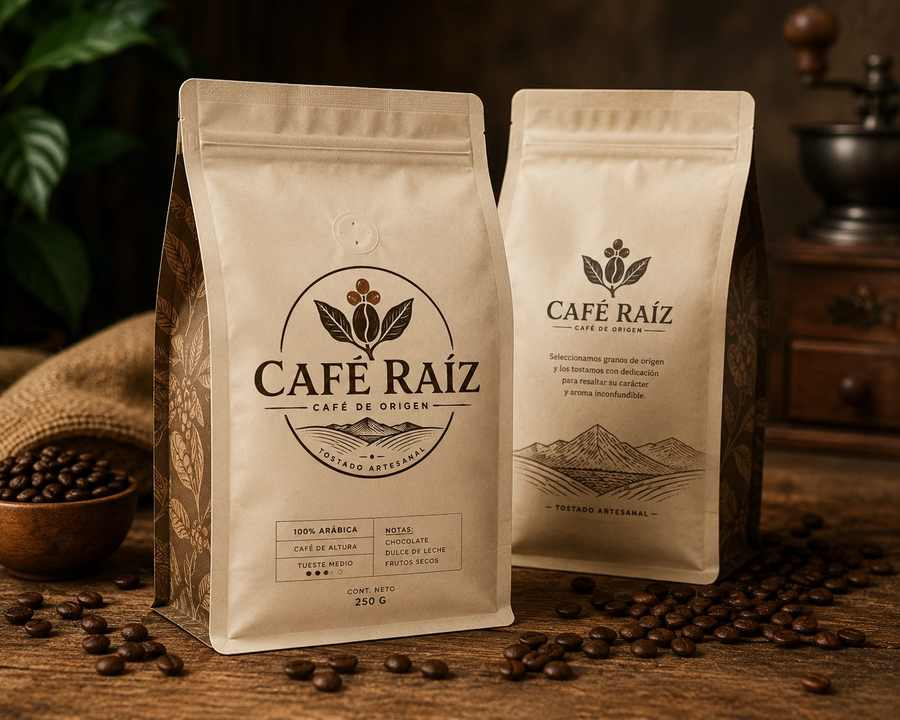

Tostado artesanal por lote chico · Envío sin cargo desde tres paquetes
Café RaízCafé de origen
GranosMolidoCafeterasSuscripción
2

Tostado artesanal · Café de altura
Grano de origen, tostado esta semana.
Seleccionamos granos de origen y los tostamos con dedicación para resaltar su carácter y aroma inconfundible. Cada paquete sale con su fecha de tostado impresa.
100% arábicaTueste medioCafé de altura
Comprar 250 g
Armar mi suscripción
Notas de cataChocolate · dulce de leche · frutos secos